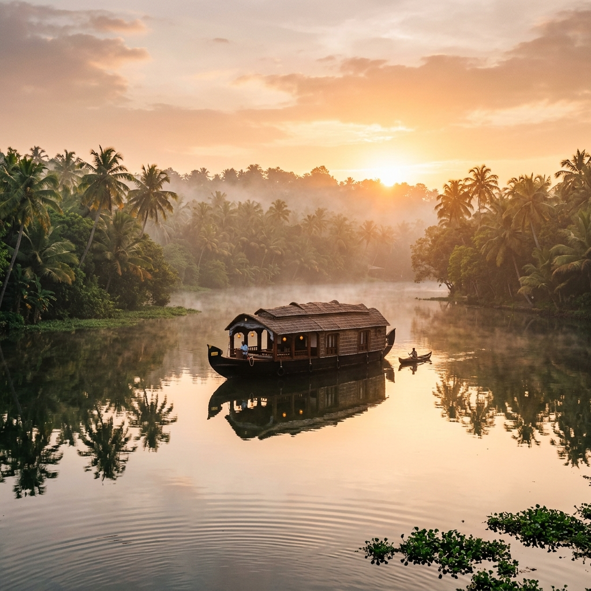

— Destination Guide
"Lush waterpaths & floating lives."
The Waterways
Alleppey (Alappuzha) is the heart of Kerala's famous backwaters. A vast network of lagoons, rivers, and canals, it is a region where water is the highway and life moves at the slow pace of a wooden paddle.
Curated Local Map
Hover over pins to identify locations on your personalized walk itineraries.
Restored premium heritage properties overlooking the tranquil backwaters of Vembanad Lake. Stay in villas featuring private plunge pools and outdoor showers, or traditional timber cottages.
Features: Heritage cottages, sunset cruises, private poolsA beautifully restored 150-year-old colonial bungalow, set inside tropical grounds beside the lake. Relax in quiet comfort with premium lakeside dining.
Features: Colonial design, luxury spa, birdwatchingNo. 01
A quiet paddle down the smallest channels of Kuttanad at sunrise, watching lilies bloom and children walking along the canal banks.
No. 02
Visit a rural coir spinner to see how coconut husks are processed and hand-woven into golden coir ropes and mats.
No. 03
Savor an authentic, spicy curry lunch of river pearl spot (karimeen) wrapped in banana leaves, served in a local backwater toddy shop.
Let's design a custom slow itinerary that takes you into the waterways of the lake.
Plan Your Alleppey Journey →